A 6-agent study mapping ~40 models against ~40 devices, plus a 6-agent council to decide what to actually buy. Built 2026-05.
Final verdict
Skip the GPU upgrade. Use cloud A100 on demand.
The council twice recommended a 24 GB GPU upgrade ($500-800 assumption). Corrected real-world numbers — used 3090 is $800-1050, stian's PSU caps at single-GPU, Lambda A100 80 GB is $2.49/hr — flip the math. At ~5 LoRAs/year × 6h ≈ $75/yr of cloud, a local 24 GB card only amortizes past ~340 training hours/year. That's not the actual cadence. Keep the 4080 for inference and dev; rent A100 when LoRA work needs it.
Top 2 actions
Pin stian's NVIDIA driver to stop unattended-upgrades from corrupting a mid-sweep. One config change. The cheapest, highest-EV move on the entire menu — directly motivated by a prior debug incident.
Pre-stage a Lambda A100 80 GB workflow for VLA LoRA. Persistent volume with the π0.5 dataset + training scripts ready to spin. ~30 min one-time setup; ~$0 idle. Turns "I need to fine-tune" from a multi-hour yak-shave into a 5-minute SSH. This is the cloud-bridge that replaces the GPU buy.
The whole study reduces to a small number of robust physical and economic facts. They explain every plot below and every recommendation above.
Memory is the master gate
Before bandwidth or compute matter, weights + KV must fit. All 288 no-go pairs are capacity failures.
Bandwidth sets local LLM speed
Single-stream decode is bandwidth-bound. M5 Max 614 GB/s sits exactly 2× above M5 Pro 307 GB/s — same capacity, twice the speed.
MoE decouples storage from speed
DeepSeek-V3, Qwen3-235B are huge to store (read: own) but cheap to run. Sparsity routes only active params per token.
Mac × VLA is a wall, not a wait
openpi (π0/π0.5), Octo, OpenVLA, Foundry are JAX-CUDA or pin flash-attn / bitsandbytes. No MPS path. CUDA-only stack means Mac sits out robotics regardless of RAM.
Pareto flattens at ~30B for LLMs
Qwen3-30B-A3B (MoE, 78 MMLU-Pro at ~15GB) is the sweet spot. Frontier (Qwen3-235B 84.4) costs 8× the memory for 6 points.
OFT moves boundaries via software
OpenVLA-OFT: same backbone as OpenVLA-7B, same memory, but parallel-decode + K=8 action chunking gives ~26× throughput. The one arrow on these plots that points down without spending a dollar.
API quality > local quality, durably
Claude Opus (~84+ MMLU-Pro) outperforms any local model the user could run. Stated default — "Claude API for daily work" — is the correct posture.
Cloud rental beats local-GPU at real cadence
At ~5 VLA LoRAs/year × 6h on Lambda A100 ≈ $75. A local 24GB card only wins past ~340 hr/yr. Not the actual workload.
02 — Personal dashboard: what fits where
The most useful single picture in the study. Rows = your decision menu (current hardware + upgrade options, A100 cap, Mac ≤$6000). Columns = models you'd actually run. Cell color = inference/LoRA verdict. Gray-hatched = CUDA-only stack (Mac can't run regardless of memory).
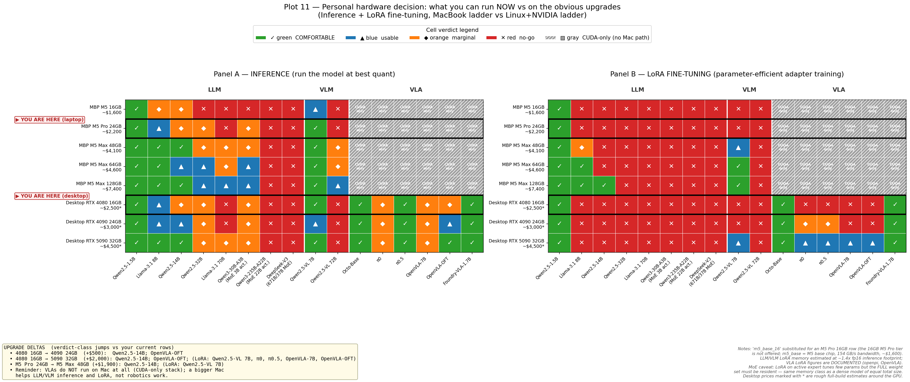
Plot 11 — Personal decision view. YOU ARE HERE markers on M5 Pro 24GB (laptop) and RTX 4080 16GB (desktop). Inference left, LoRA right. The diagonal staircase is the memory wall; the gray-hatched VLA columns on every Mac row are the CUDA wall.
And the per-device top-3 picks ranked by quality × popularity:
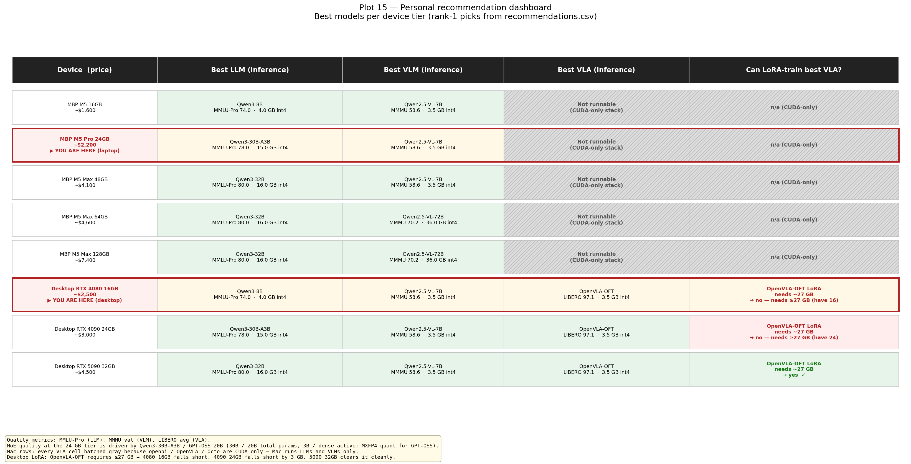
Plot 15 — Recommendation grid. For each device, the best inference pick in each category and whether the best VLA is LoRA-trainable. Mac × VLA always reads "Not runnable (CUDA-only)."
Category
The pick for the user's tier
Why
Daily coding
Claude Code (Opus/Sonnet, API)
~84+ MMLU-Pro dominates any local model
Local LLM (batch, offline, OpenClaw)
Qwen3-30B-A3B (Q4_K_M)
78 MMLU-Pro at ~15GB int4. MoE keeps decode fast (3B active).
Local VLM
Qwen2.5-VL-7B
58.6 MMMU, Pareto-optimal at the tier, Ollama+MLX support
VLA inference (stian only)
OpenVLA-OFT
97.1 LIBERO (SOTA), real-time on a 4090; runs on 4080 too
VLA LoRA (cloud)
π0.5 or OpenVLA-OFT on Lambda A100 80GB
Documented LoRA = 22.5-27 GB; 4080 can't, A100 can. Cloud is the bridge.
Task-specific (1 task, ~50 demos)
ACT or Diffusion Policy
Different evaluation regime. 80-95% in-distribution success.
03 — Where the boundaries are, and why
Five orthogonal views of the same physics. Each cliff has a single underlying reason.
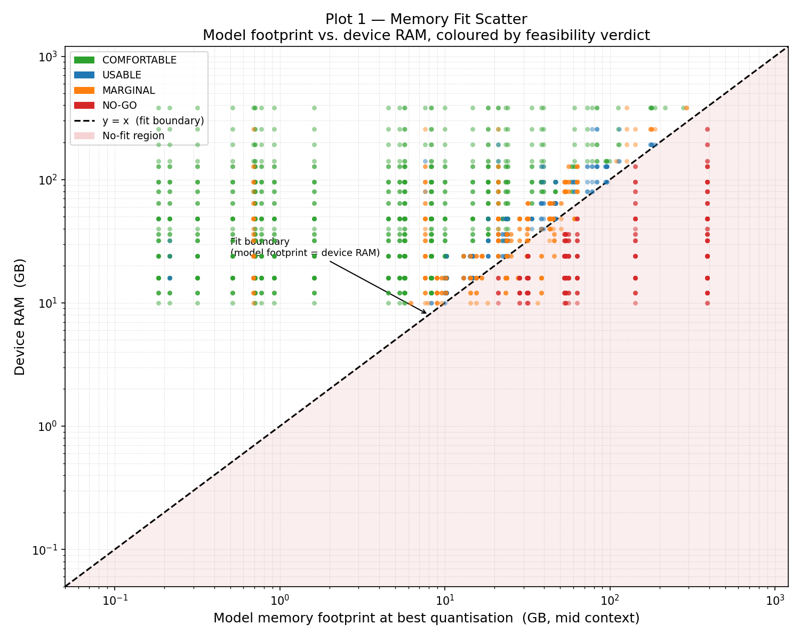
Plot 1 — The memory wall (y = x). Every one of 288 no-go pairs sits on or below the diagonal. Memory capacity, not compute, is the master gate. A 70B model is no-go on a 24GB 4090 even at 3-bit; usable on a 128GB M5 Max.
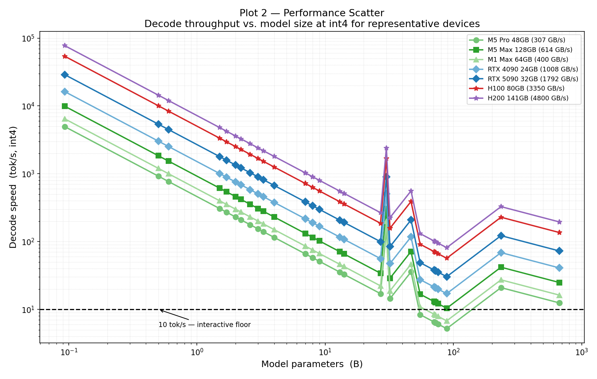
Plot 2 — The bandwidth fan. Decode tok/s = bandwidth ÷ bytes-per-token. M5 Max sits exactly 2× above M5 Pro across all model sizes (614 vs 307 GB/s). H200 (4.8 TB/s) sustains >100 tok/s even at 70B. This is why bandwidth, not TFLOPS, sets interactive feel.
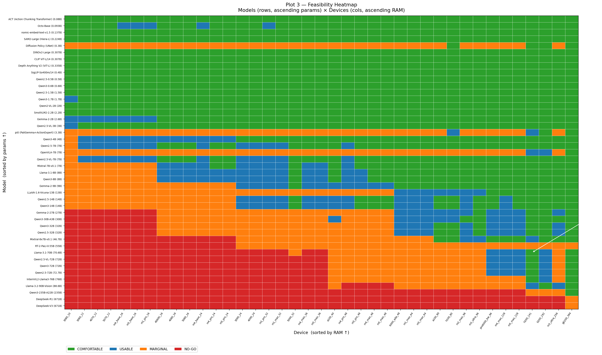
Plot 3 — The staircase. Models (rows, ascending size) × devices (cols, ascending memory). The green→orange→red staircase is the headline: usable size climbs monotonically with device memory. 16GB consumer cards cap at sub-4B comfortable; only datacenter stays green into the 235B-MoE row.
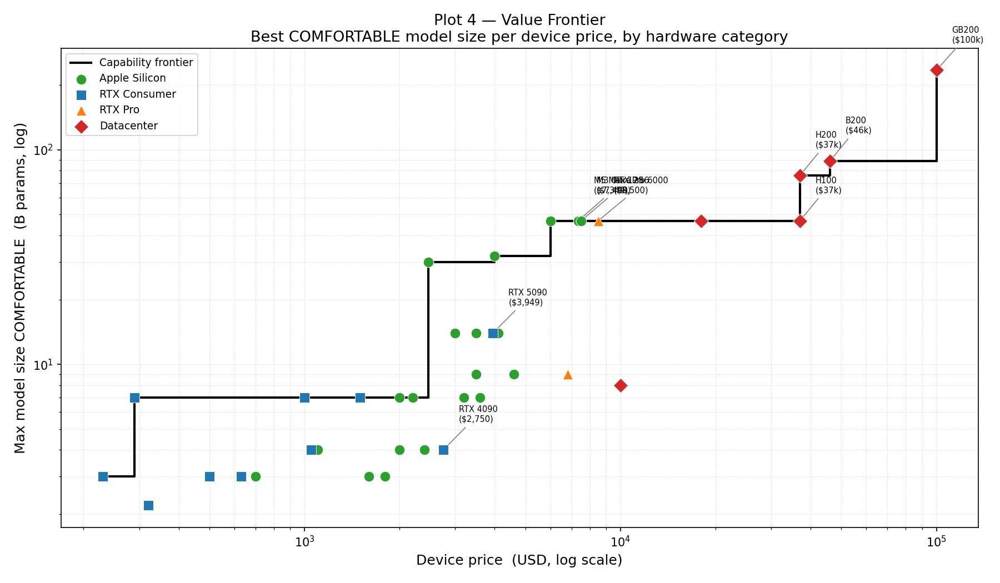
Plot 4 — The price cliff. Apple Silicon and consumer RTX scale smoothly up to ~$8K / ~46B params, then a hard discontinuity at ~$8.5K–$37K where only datacenter GPUs unlock 76B+ comfortably. HBM is manufactured and priced in a different regime than GDDR/LPDDR.
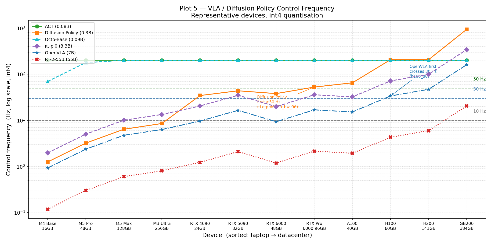
Plot 5 — VLA control-loop feasibility. Tiny policies (ACT 80M, Octo) saturate at 200 Hz on any laptop. OpenVLA-7B needs an H100-class GPU to first cross 30 Hz at int4; diffusion policies (50 denoising steps) only clear 50 Hz around the Blackwell tier.
04 — What a dollar buys
Capacity and compute are orthogonal purchases. Mac dollars and NVIDIA dollars buy fundamentally different things.
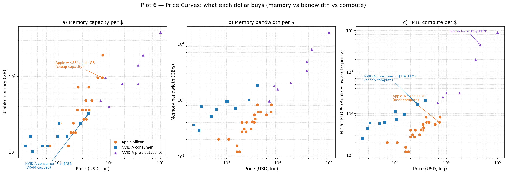
Plot 6 — The two purchase families. $ per GB: Apple wins (cheap unified memory scales to 128–192 GB at laptop prices; NVIDIA hard-caps at 24–32 GB). $ per TFLOPS / $ per GB/s: NVIDIA wins decisively. Mac dollar = cheap capacity, dear compute. NVIDIA dollar = cheap compute, capped capacity.
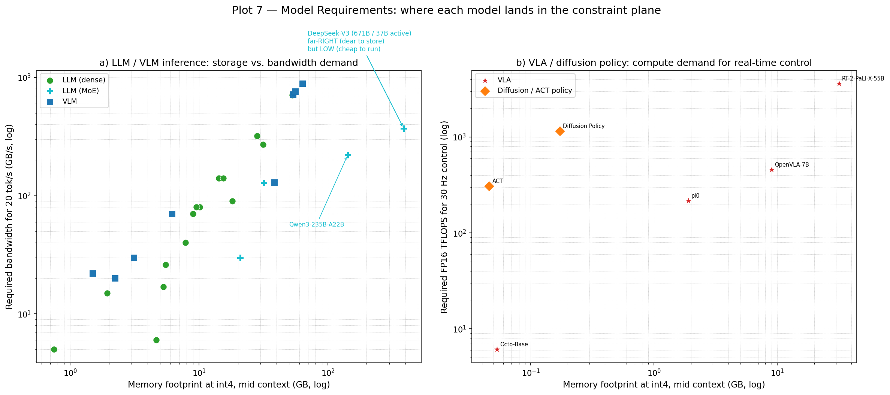
Plot 7 — Models, demand-side. Each model placed at (footprint, required-bandwidth or required-compute). The MoE surprise: DeepSeek-V3 and Qwen3-235B sit far-right (huge to store) but low (tiny active-param demand) — expensive to own, cheap to operate.
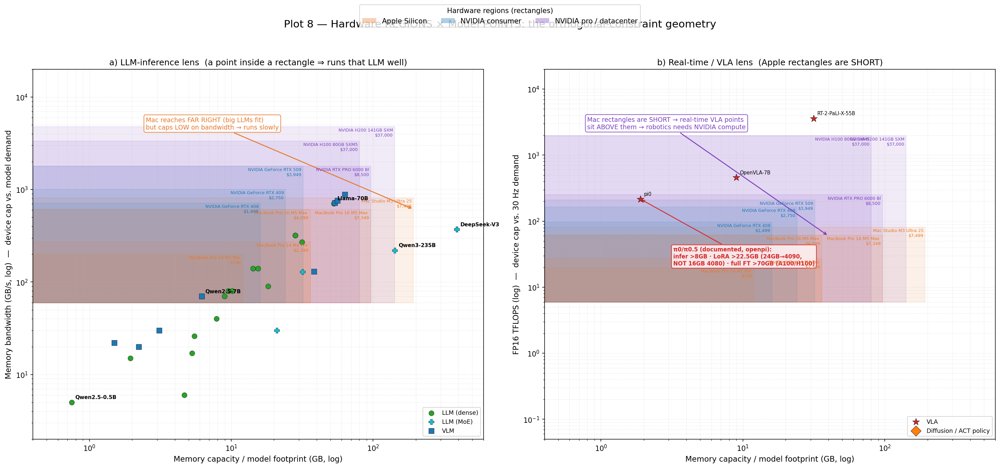
Plot 8 — The hero. Hardware = cost-labeled rectangles (width = usable GB, height = bandwidth or compute). Models = points. A point inside a rectangle means that device runs it well. Mac is wide but short: big LLMs fit but bandwidth caps low. NVIDIA consumer is narrow but tall: high compute, VRAM-capped. Datacenter is wide AND tall. The geometry IS the answer.
05 — VLAs: inference vs fine-tuning, the cliff that matters
Robotics models are CUDA-only and have a documented LoRA cliff at 22.5 GB. This is where the local-vs-cloud decision actually plays out.
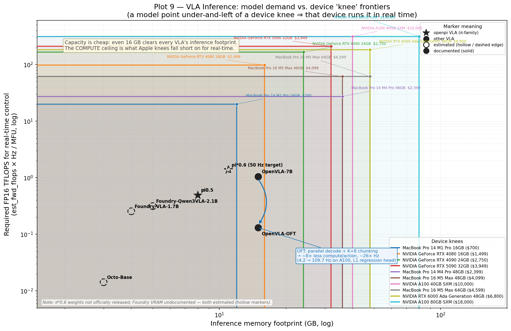
Plot 9 — VLA inference. Device frontiers drawn as L-shaped knees (vertical = memory wall, horizontal = compute ceiling). Inference memory is never the gate — even a 16GB 4080 clears every VLA. Compute is. The arrow from OpenVLA-7B to OpenVLA-OFT shows the software-only win: ~8× less compute per emitted action, ~26× higher achievable Hz (4.2 → 109.7 Hz on A100).
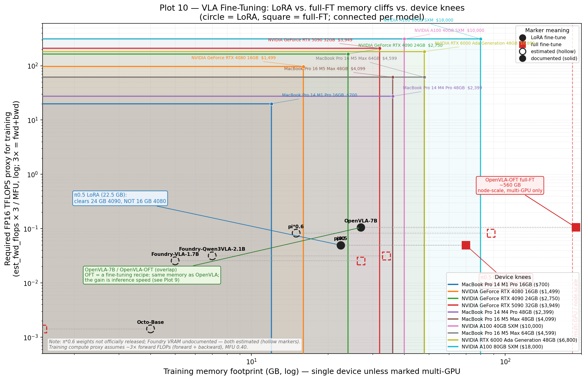
Plot 10 — VLA fine-tuning. Each model appears twice: circle = LoRA, square = full-FT, connected by a line. π0.5 LoRA (>22.5GB) clears a 24GB 4090 but NOT a 16GB 4080. Full-FT (>70GB) needs A100 80GB. OpenVLA full-FT (~560GB) is node-scale — 8×A100. This is the cliff the corrected verdict navigates by going cloud.
ACT and Diffusion Policy are task-specific, not generalist. They're not on LIBERO because they're trained per-task. Judge them by sample-efficiency: ACT hits 80–95% on bimanual ALOHA with ~50 demos; DP near-100% on Robomimic with 200 demos. Different problem, not inferior.
06 — Quality vs size: is local actually any good?
The missing dimension. Fitting and being fast doesn't mean the model is useful. These three plots add MMLU-Pro / MMMU / LIBERO so the question "can I run it" becomes "should I run it."
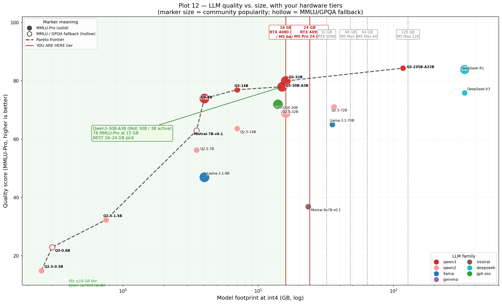
Plot 12 — LLM quality vs size. The Pareto frontier flattens hard around 30B. Qwen3-30B-A3B at 15GB int4 scores 78 MMLU-Pro — 6 points below the frontier ceiling at <10% the cost. Your YOU lines (16/24GB) cross the frontier right at this point. For comparison, Qwen3-235B (84.4) needs >117GB.
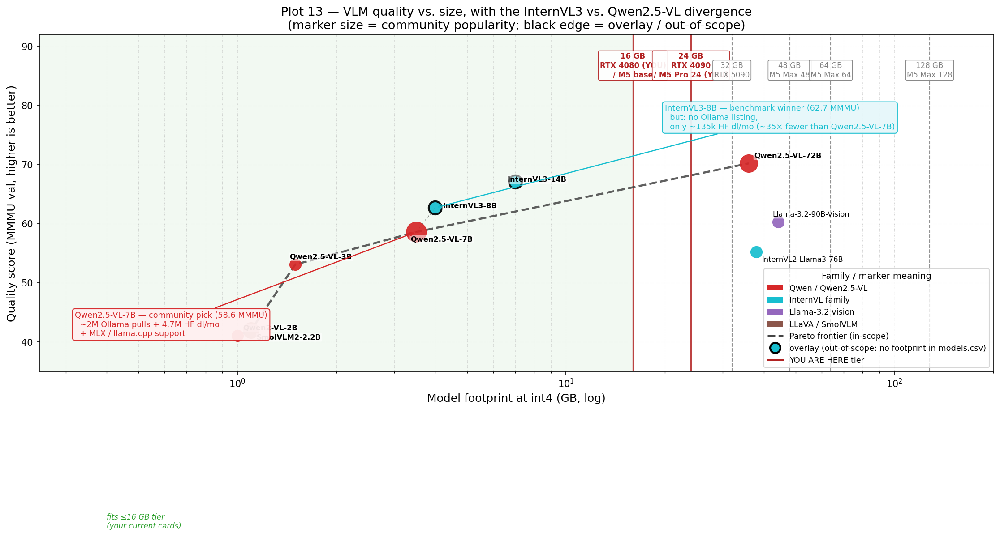
Plot 13 — VLM quality vs size. The benchmark winner ≠ the community winner. InternVL3-8B scores higher on MMMU but has 35× fewer HF downloads and no Ollama listing. Qwen2.5-VL-7B is the right pick at the tier because it actually runs in the tools you'd use. Deployment friction beats raw benchmarks.
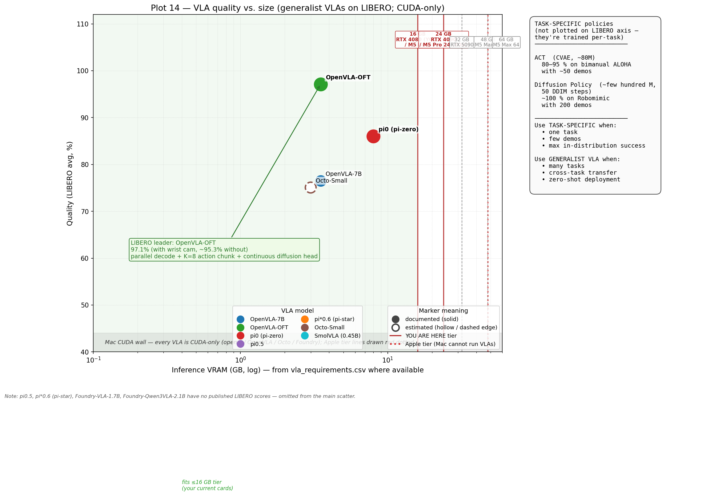
Plot 14 — VLA quality. Generalist VLAs scored on LIBERO. OpenVLA-OFT leads at 97.1% (parallel decode + K=8 chunking on top of OpenVLA's backbone). π0.5 strong real-world generalist. π*0.6 would be new SOTA but weights aren't released. ACT and DP get a side panel because they don't compete on LIBERO — they're trained per-task.
07 — The council deliberation
After the data was in, six agents argued the decision. Five advocates, one chair, run twice independently with no cross-contamination. Both rounds converged on the same verdict — buy a 24 GB upgrade for ~$500-800 — before the cost inputs were corrected. The council was structurally right (cloud beats local at the user's actual cadence is the same answer); the corrected numbers just made the cloud-only conclusion explicit by removing the cheap-GPU path.
Advocate
Position
Cost
The Roboticist
Buy 4090 24 GB — unlock VLA LoRA
$500–800 (assumed)
The LLM Advocate
Upgrade Mac to M5 Max 48 GB — daily-driver bandwidth
$1,900
The Cloud Economist
Buy nothing; rent A100 on demand
$0 cap
The Portability Strategist
Mac 48-64 GB — CVPR is in 12 days
$1,900-2,500
The Patient Investor
Wait 6-9 months for M6 / RTX 60-series
$0
Both Chairs (independent)
Buy 4090, hold Mac, after CVPR
$500-800
Reality (corrected)
Skip GPU. Cloud A100 on Lambda when needed.
$0 + $75/yr
The corrected numbers: used 3090 24GB = $800-1050 (not $500-800); stian PSU caps dual-GPU; Lambda A100 = $2.49/hr (not $1.79); user cadence ≈ 5 LoRAs/yr × 6h ≈ $75/yr cloud spend. Breakeven point for a local 24GB upgrade is ~340 GPU-hours/year, well above realistic usage.
08 — What would flip the verdict
The "skip GPU, cloud-only" decision holds today. These are the observable events that would change it:
Trigger
Action
Cloud spend exceeds ~$250/mo (≈100 hr/mo) for 3 consecutive months
Re-evaluate local 24GB or 32GB GPU. The cadence has flipped.
Cold-start friction on Lambda becomes a documented research bottleneck
Buy the GPU. Per-iteration friction is what cloud trades for cost.
RTX 50-series 24GB lands at <$700 used
Reconsider — different math at lower price floor.
M6 Max releases with >30% bandwidth gain at similar pricing
Skip M5 Max; wait for M6 if local LLM use turns daily.
π*0.6 or successor releases with LoRA requiring >24GB
Cloud-only is forced anyway; A100 80GB stays the answer.
Sustained >60 min/day of local LLM on the MBP for 30 days
The Mac upgrade case becomes real (vs current stated API-default).
Appendix — methodology & artifacts
Built as a 6-agent pipeline: Hardware Profiler → Model Cataloger → Memory/Quant Analyst → Performance Estimator → Feasibility Classifier → Visualization Architect. Plus follow-on benchmarks (LLM/VLM/VLA), Pareto synthesis, and a 6-agent deliberation council (run twice).
All inputs and outputs are deterministic CSVs; every plot is regenerable from compute_*.py and make_plots_v*.py against data/*.csv.